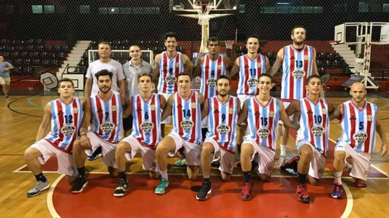

Basquet
El club ganó ampliamente en la apertura de la temporada de la zona de la Asociación Rosarina de Básquetbol: venció a Talleres de Villa Gobernador Gálvez por 77 a 61
El club ganó ampliamente en la apertura de la temporada de la zona de la Asociación Rosarina de Básquetbol: venció a Talleres de Villa Gobernador Gálvez por 77 a 61
El equipo de futsal de Sociedad Tiro Suizo Rosario atraviesa un gran momento en el campeonato de la Asociación Rosarina de Fútbol, consolidándose como uno de los principales animadores del certamen. Con un plantel joven pero experimentado, el conjunto del sur rosarino viene mostrando un estilo de juego ofensivo y ordenado que lo mantiene entre los primeros puestos de la tabla
La disciplina de tenis en el Club Tiro Suizo de Rosario ocupa un lugar destacado dentro de la vida deportiva de la institución. Con canchas en excelente estado y una escuela formativa abierta a todas las edades, el club promueve la práctica del tenis tanto a nivel recreativo como competitivo. A lo largo de los años, numerosos socios se han formado en sus instalaciones, participando en torneos internos y ligas locales que fomentan la camaradería y el espíritu deportivo.